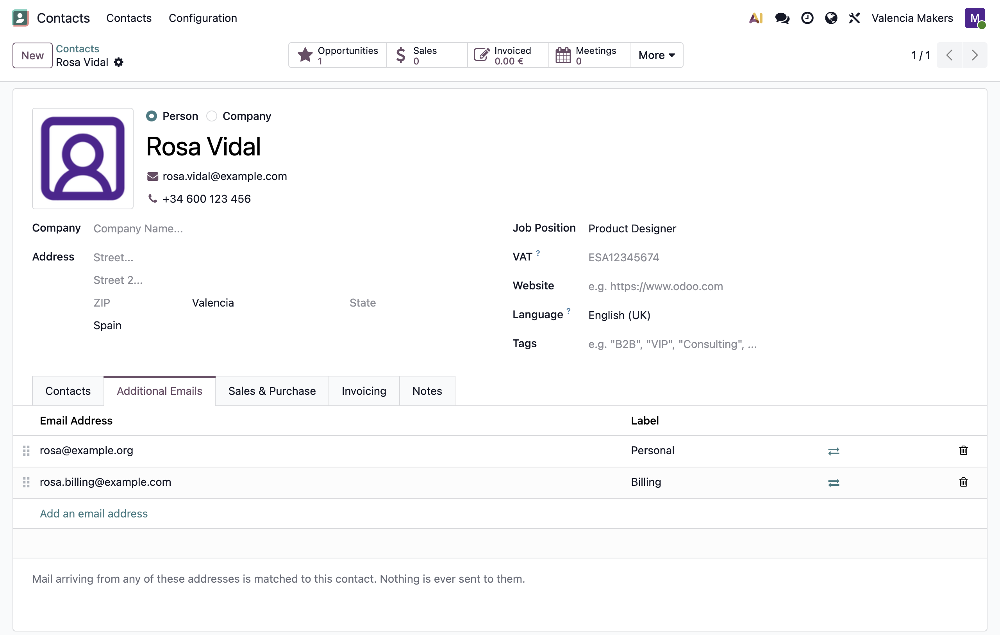
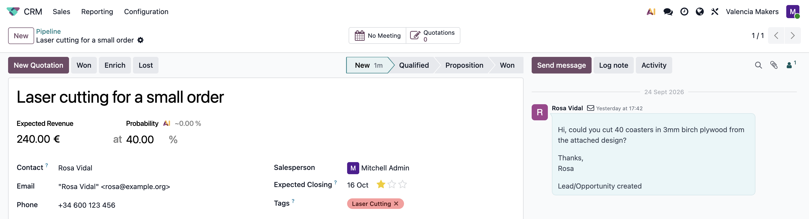

In standard Odoo, a contact can have only one email address, and mail from another address is treated as a unique sender, resulting in duplicate contacts. Multiple Contact Emails lets a contact have additional email addresses, so mail from any of them is matched to the same contact record.

Add, label, and reorder a contact's email addresses in the new Additional Emails tab.
Swap an additional email address with the primary email in one click.
Search contacts by any of their addresses, in the search bar and when selecting a contact.
Merging two contacts keeps both sets of addresses in the resulting contact.
Odoo sends mail to the primary address only; additional addresses are used only to recognise incoming mail. Leads, applicants, and tickets created from an additional email address keep that address on their records, and the contact's primary address is left as you set it.
This module only requires Odoo's Discuss module, and works on both Community and Enterprise.